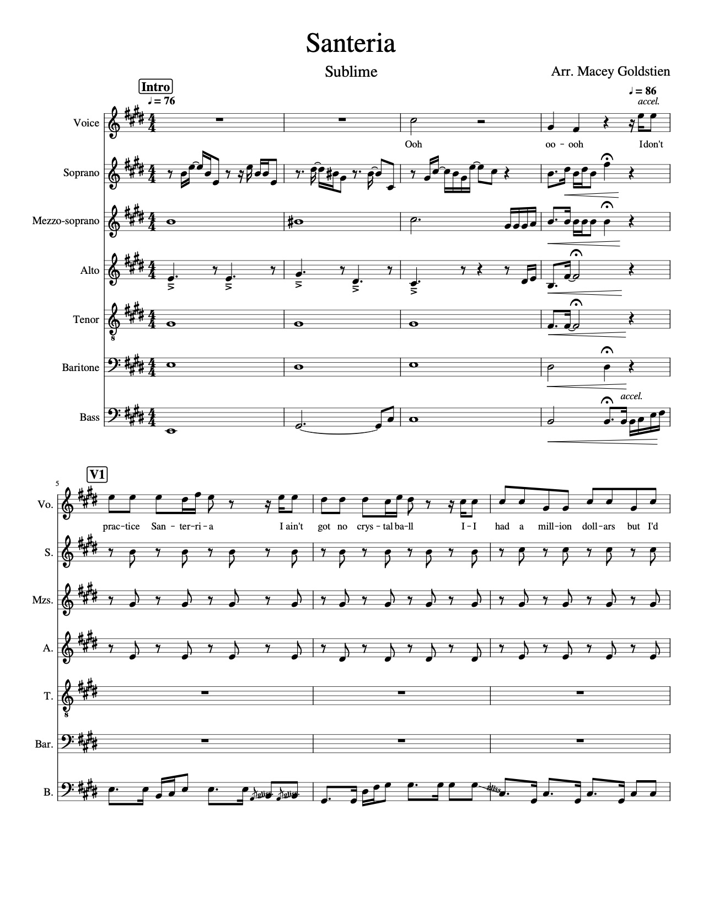

La persistencia de sueñoSubmission to Albricias Student Magazine — March, 2017
Anoche, era solo un soñador.
La escena estaba vacía, sin vida,
A la izquierda, la mesa brilló
Un arbolito había crecido de la mesa,
A mi alrededor, había relojes.
Vacilé por un momento.
Continué adelante.
No podía quedarme para siempre.
Ya no soy un soñador genuino.
Lamento la pérdida de mis sueños. |
SanteriaArranged for A Cappella — April, 2020

|